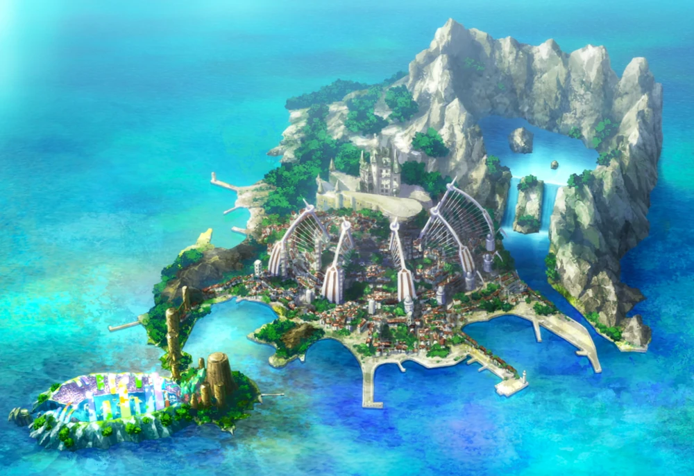

Elegia, dikenal sebagai “Pulau Musik” (音楽の島, Ongaku no Shima), adalah pulau fiktif yang menjadi latar utama dalam film One Piece Film: Red. Pulau ini menjadi lokasi konser besar yang diselenggarakan oleh Uta, penyanyi terkenal di dunia One Piece.
Dulu, pulau ini merupakan tempat berdirinya Kerajaan Elegia (エレジア王国, Erejia Ōkoku) yang dipimpin oleh Raja Gordon. Namun, dua belas tahun yang lalu, seluruh penduduknya—kecuali Gordon—dibantai ketika Tot Musica dilepaskan dari segelnya.